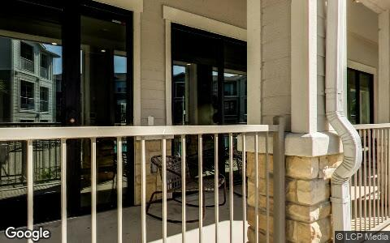

This Issue
August 2026 edition
228 bought vs 37 sold
Homes acquired by flippers versus flip resales recorded this edition; a year ago the same pair was 197 bought and 42 sold
Flippers are buying far faster than they are selling: 228 acquisitions against 37 recorded resales this edition, pushing held inventory to 2,155 homes
Flippers took in 228 homes this edition and closed only 37 resales, a wider gap than the 197-to-42 split a year ago. Held flip inventory stands at 2,155 homes, up from 1,839 in the same month last year, and the resale that does clear is thinner: median margin 33.6% versus 45.6% a year ago. Acquisition appetite has not adjusted to the exit rate, so the pipeline is absorbing capital faster than it releases it. Recorded counts lag four to eight weeks and the newest month can grow, but the direction is consistent across the last four months.
Investor Playbook
What this issue's numbers suggest checking, by investor type. Observations from recorded data — not investment, legal, or tax advice.
Sell into the buy side, not the exit side
Wholesalers
Twelve assignments surfaced on recorded deeds against 28 a year ago, but flippers still absorbed 228 homes. The data suggests demand is in acquisition-hungry accounts working Kyle (78640, $190,775 median buy), Elgin (78621, $215,992) and Bastrop (78602, $197,039), where basis is under $220,000. Buyers with 2,155 homes already held will underwrite tighter, so worth leading with verified repair scope rather than spread.
Underwrite to a 33.6% margin, not last year's 45.6%
Flippers
Median margin per completed flip fell to 33.6% from 45.6% and median sale to $491,967 from $644,144. With 2,155 homes in the held pool and only 37 resales recorded, worth stress-testing carry beyond the 126-day median hold; the 75th percentile is 236 days. Single family resales cleared at $322,529 median and $140/sqft, which is the realistic exit reference for standard product.
Basis is cheapest where flippers are not exiting
Landlords
Bastrop, Elgin, Dale ($185,069 median buy) and Maxwell ($213,701) posted heavy buy counts and zero recorded flips this edition, indicating hold rather than resale intent. Investor purchase medians are down to $357,890 from $399,000, and 1,415 local landlords added 2,823 units since the last drop. Worth checking whether these sub-$220,000 corridor buys pencil against Austin's $639,065 median and $349/sqft.
Fill the carry gap the 2,155-home pool is creating
Private lenders
Only 30 private loans were recorded at a $260,900 median, against 156 a year ago, while flip inventory rose from 1,839. That mismatch points to demand for extension and carry paper on projects passing the 126-day median hold. The data suggests pricing against the $322,529 single-family flip median rather than the $491,967 headline, given 28% of local flippers are lifetime net-negative.
Small multifamily is trading at a discount to single family per foot
Multifamily investors
Thirty-two 2-4 unit purchases cleared at a $446,134 median and $214/sqft, below single family at $251/sqft. Small multifamily also appeared in flip exits for the first time in this dataset at a 5.4% share. With seller-financed notes down to 155 from 239, worth confirming financing before contract rather than assuming carryback is available.
Factoids
Numbers from this period a practitioner would repeat to a colleague. Each computed directly from recorded instruments.
126 days — Median hold on flips that sold this edition
trending down · vs 181.5 days a year ago
The flips that do clear are turning almost two months faster than last year, with 24% under 90 days. Speed is coming from the resales that were priced to move, not from the whole book.
95% of flip resale dollars — Share of flip sales from the top ten sellers
trending up · vs 51% a year ago
Exit activity is concentrated in a handful of operators, led by Brookfield Residential Texas Homes with 37 flips over the trailing year. Smaller flippers are largely absent from the sold column this edition.
$357,890 — Median investor purchase price
trending down · was $399,000 a year ago
Buy-side pricing has stepped down roughly $41,000 at the median while purchase count fell to 882 from 1,064. Sellers are meeting investors at lower numbers rather than transacting at last year's levels.
30 private loans — Recorded private loans, median $260,900
trending down · vs 156 a year ago
Recorded private debt has all but vanished while seller-financed notes also slipped to 155 from 239. Deals are closing on cash, bank paper, or unrecorded arrangements.
17% out of state — Out-of-state share of investor purchases, median $370,431
holding steady · vs 66% local at a $347,096 median
California alone supplied 50 buyers, ahead of Utah at 12 and New York at 8. Out-of-area capital is paying above the local median, which matters when bidding on the same rental stock.
$150/sqft in Kyle — Median investor purchase price per square foot, Kyle (78640)
trending down · vs $349/sqft in Austin
Kyle's 32 buys came in at a $190,775 median against a $320,737 median resale in the same zip. The basis gap between the southern corridor and the city core is the widest product-mix spread in the table.
Market Activity — Investor Purchases
Monthly count of investor purchases of MSA properties (left axis) and the median purchase price (right axis), trailing 13 months. The most recent month can grow up to ~15% as late recordings arrive.

Investor purchases per month (bars) and median purchase price (line), trailing 13 months.

Which vintage of housing investors bought this edition, by decade built.
Where the Money Went
The geography of the period's investor activity: which zip codes saw the most recorded deals, and the largest individual transactions at street level.
The 8 busiest zip codes for investor deals
Pins rank the busiest zips by recorded investor deals (purchases + flips of existing homes) this period — #1 busiest; orange = top 3; pin size scales with deal volume. Median buy is the typical investor purchase from the investor feed; median sale is the typical flip resale from the deed record. Click a pin for details; full table below.
| # | Zip | Area | Purchases | Flips | Median buy | Median sale |
|---|
| #1 | 78752 | Highland | 46 | 0 | $3.1M | n/a |
| #2 | 78628 | Georgetown West | 38 | 4 | $432,600 | $388,858 |
| #3 | 78602 | Bastrop | 41 | 0 | $197,039 | n/a |
| #4 | 78745 | South Austin / Westgate | 37 | 3 | $448,210 | $610,470 |
| #5 | 78641 | Leander | 34 | 1 | $410,822 | $425,733 |
| #6 | 78621 | Elgin | 33 | 1 | $215,992 | $194,712 |
| #7 | 78640 | Kyle | 32 | 2 | $190,775 | $320,737 |
| #8 | 78664 | Round Rock | 29 | 3 | $299,250 | $266,000 |
Largest recorded deals of the period, at street level

$45.4M · Purchase
14801 RONALD REAGAN BLVD, Leander 78641
2–4 unit · 289,565 sqft · Jun 8
Street View Sep 2022 — before the purchase

$45.4M · Purchase
5540 SOFIA PL, Round Rock 78665
2–4 unit · 315,884 sqft · Jun 1
Street View Oct 2025 — before the purchase

$43.8M · Purchase
9218 BALCONES CLUB DR, Austin 78750
2–4 unit · 265,132 sqft · May 12
Street View Jan 2025 — before the purchase

$39.2M · Purchase
828 BEBEE RD, Kyle 78640
2–4 unit · 240,168 sqft · 2 parcels · May 20
Street View Aug 2022 — before the purchase

$31.9M · Purchase
2401 WESTINGHOUSE RD, Georgetown 78626
2–4 unit · 288,312 sqft · Jun 25
Street View Feb 2024 — before the purchase
$14.1M · Purchase
1443 CORONADO HILLS DR, Austin 78752
2–4 unit · 36,557 sqft · Jun 9
Street View Mar 2024 — before the purchase
Deal sheet — largest recorded transactions
| Date | Type | Amount | Property | Use |
|---|
| Jun 8 | Purchase | $45.4M | 14801 Ronald Reagan Blvd, Leander 78641 | 2–4 unit |
| Jun 1 | Purchase | $45.4M | 5540 Sofia Pl, Round Rock 78665 | 2–4 unit |
| May 19 | Flip | $2.4M | 8307 Silver Ridge Dr, Austin 78759 | Single family |
| Jun 16 | Flip | $1.4M | 4500 Jinx Ave, Austin 78745 | Single family |
| May 6 | Private loan | $2.1M | 4732 Cat Mountain Dr, Austin 78731 | Single family |
| May 5 | Private loan | $700,000 | 7926 Mullen Dr, Austin 78757 | 2–4 unit |
Largest flip margin deals of the period, at street level
Gross margin = recorded sale price minus the flipper's recorded purchase price. Purchase deeds are recoverable for roughly 4 in 10 flips; rehab and carry costs are not public record.

$834,358 gross · bought $555,275 (Jul 2025) → sold $1.4M
4500 JINX AVE, Austin 78745
Single family · 1,376 sqft · Jun 16
Street View Jan 2025 — before the flip (pre-renovation)

$412,300 gross · bought $857,850 (Jun 2025) → sold $1.3M
2206 LA CASA DR, Austin 78704
Single family · 885 sqft · May 27
Street View Jan 2025 — before the flip (pre-renovation)

$27,223 gross · bought $210,801 (Mar 2026) → sold $238,024
1000 PLATEAU TRL, Georgetown 78626
Single family · 2,208 sqft · Jun 16
Street View Apr 2024 — before the flip (pre-renovation)
Flip Structure — Year over Year
How the flip market itself is changing: margins, who is doing the flipping, what they flip, and where. Same two calendar months, this year vs last, from the current data extract.
| Flip market structure | Same months last year | This edition |
|---|
| Flips sold | 42 | 37 |
| Median sale | $644,144 | $491,967 |
| Median $/sqft | $332 | $307 |
| Sale vs county-assessed | 1.35× | 1.28× |
| Median gross margin (matched buys) | $174,616 | $131,072 |
| Median margin % | 46% | 34% |
| Median hold | 6.0 mo | 4.1 mo |
| Homes bought by flippers | 197 | 228 |
| Net to inventory (bought − sold) | +155 | +191 |
| Active flippers | 38 | 29 |
| Top-10 flippers' revenue share | 51% | 95% |
| Median house: sqft / beds / built | 1899 / 4 / 1997 | 1922 / 3 / 1986 |
| Pre-1950 stock share | 2% | 5% |
| 2–4 unit share | 0% | 5% |
| Median distance from downtown | 22.8 km | 24.7 km |
Homes bought counts every deed recorded to a known flipper in the window, whether or not it has resold; net to inventory is that minus flips sold, so a positive number means flippers took on more houses than they cleared. The standing stock is in the Flip Pipeline section below and moves differently, because houses held past 24 months drop out of it.
Attributed profit per flip (per-investor aggregates, by drop period): Jul 25→Feb 26: 3,658 flips, $1.5M/flip · Feb 26→Jun 26: 915 flips, n/a (revisions) · Jun 26→Aug 26: 321 flips, n/a (revisions).
County mix (share of flips, last year → this edition): Travis 60%→49% · Williamson 21%→32% · Hays 14%→14% · Caldwell 2%→3% · Bastrop 2%→3%.
Biggest zip share moves: Georgetown West 0.0%→10.8% · Round Rock 0.0%→8.1% · Manor 7.1%→0.0% · East Austin 0.0%→5.4% · Circle C 4.8%→0.0% · Georgetown East 4.8%→0.0%.
Flip Pipeline — Buying, Selling and Inventory
Homes bought by known flippers and flips sold, per month, alongside the stock of houses sitting in flipper hands. A house enters inventory when a flipper buys it and leaves when the resale records — or when it passes 24 months unsold, at which point it stops being a flip in progress. That third flow is the big one — it runs larger than the gap between buying and selling — so inventory routinely falls in months when flippers buy more than they sell.

Solid = recorded, dashed = projected. Three flows move the stock: bought in, sold out, and aged out — purchases that pass 24 months unsold and stop counting as flips in progress. The heavy green line is inventory, read against the RIGHT axis, which is zoomed to its own range so month-to-month movement is visible — the stock runs about thirty times the size of the monthly flows, so on a shared scale it would look frozen.
| Flip pipeline | Bought / mo | Sold / mo | Aged out / mo | Inventory |
|---|
| Latest recorded month (2026-05) | 147 | 24 | 82 | 2,194 |
| Projected (2026-11) | 122 | 29 | 56 | 2,207 |
Method: a straight-line trend through the last 24 months, adjusted for the month of the year. Tested by hiding the most recent six months and predicting them, it missed purchases by 21%, sales by 25% and inventory by 11% on average — treat it as direction, not a number to underwrite against. The newest month or two of deeds are still arriving, so the series stops before them.
Flipper Profile — The Working Flipper
The 70th–90th percentile of local flippers by lifetime flip count — the established operators below the whales: 3–8 lifetime flips each. Bath counts are not in the assessor extract.
565
Flippers in the band
each with 3–8 lifetime flips (avg 4.1)
$169,575
Median gross margin
401 flips matched to their purchase price
5.9 mo
Typical hold
purchase to resale, matched deals
1827 sqft · 3 bd
Typical house
median year built 1995

flippers by lifetime flips · orange = this band
Where they work: South Austin / Westgate (78745) 7% · Mueller / Windsor Park (78723) 4% · Bastrop (78602) 4% · Lago Vista (78645) 3% · Manor (78653) 3%.
Market Pulse
| per month, 2025 | per month, 2026 | change | avg/mo 2yr | avg/mo 4yr |
|---|
| ▲ Homes bought by flippers | 99 | 114 | +16% | 108 | 96 |
| ▼ Flips sold (deeds) | 21 | 19 | -12% | 23 | 22 |
| ▼ Lending deals funded | 304 | 92 | -70% | — | — |
| ▼ Seller/notes held (net) | 953 | 309 | -68% | — | — |
| Investors (net) | -897 | 446 | — | — | — |
Flips and flipper purchases = recorded deeds, same two months each year; their 2- and 4-year columns are per-month averages of the deed series. The remaining rows come from the investor file, which spans 13 months, so they have no multi-year average (2026: Jun 2026 → Aug 2026; 2025: Jul 2025 → Feb 2026).
Past Issues
Methodology
Source Data
County recorder & assessor via FARES
Every figure is computed from recorded instruments (deeds, mortgages, assignments) and assessor property records for the five counties of the Austin-Round Rock-Georgetown MSA. No surveys, no estimates, no listings data.
This edition analyzes transactions dated May 1 – June 30, 2026, as recorded through the 2026-08 data extract.
Who Counts as an Investor
Transaction-pattern identification
Investors are entities whose recorded transaction history looks like investing: rental holding (landlords), short-hold resales (flippers), private mortgage lending, note holding, or contract assignment (wholesalers). Banks, homebuilders, iBuyers, SFR funds, and government entities are identified by name and reported separately from small investors.
How Comparisons Work
Attribution deltas + same-window comparisons
The Market Pulse reports activity attributed between successive data drops, from the per-investor lifetime totals maintained upstream — periods differ in length, so per-month rates are shown. Elsewhere, "vs. year ago" compares the same calendar months one year earlier, counted from the same data extract. Transfers under $5,000 (quitclaims, partial interests) are excluded everywhere. Counts lag recording by 4–8 weeks, and the newest month can grow up to ~15% as late records arrive — direction is reliable before magnitude.
Known Limits
Floors, not ceilings
Wholesale assignments only appear when they touch a recorded deed, so those counts are a floor. Flip hold times are measured from the prior recorded sale. Names are the owner of record, which may be an LLC or trust.
About
Purpose
A working tool for small real estate investors in the Austin metro: what actually closed, where, at what prices, and what it suggests checking next — one theme per issue.
Cadence
Published with each bi-monthly data drop, covering the two most recent complete months of recorded activity.
Disclaimer
Observations from public records, not investment, legal, or tax advice. Past activity does not guarantee future results. Verify any property or counterparty independently before transacting.